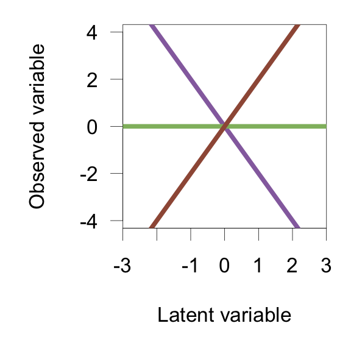
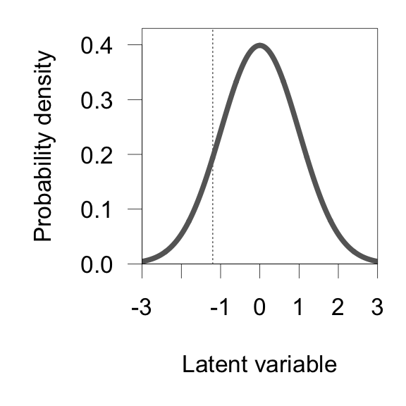
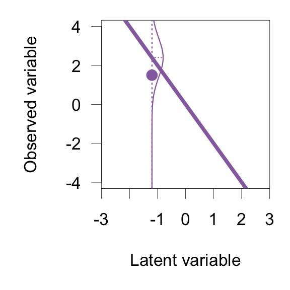
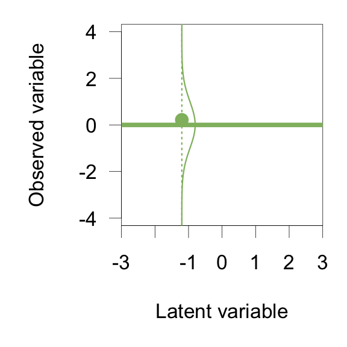
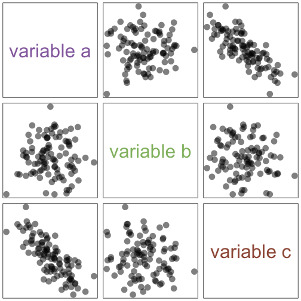
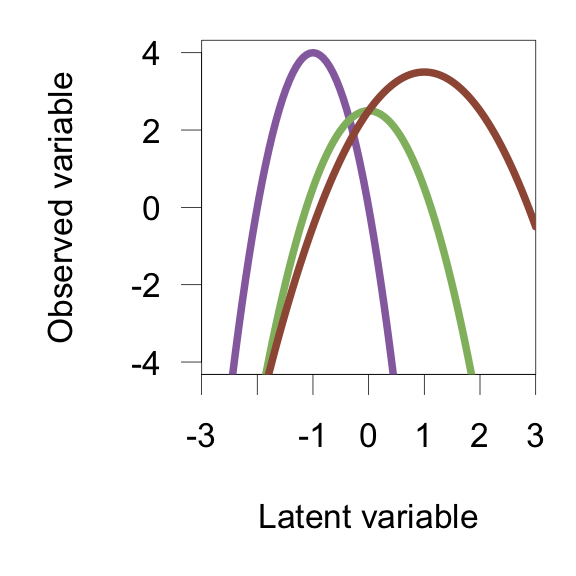
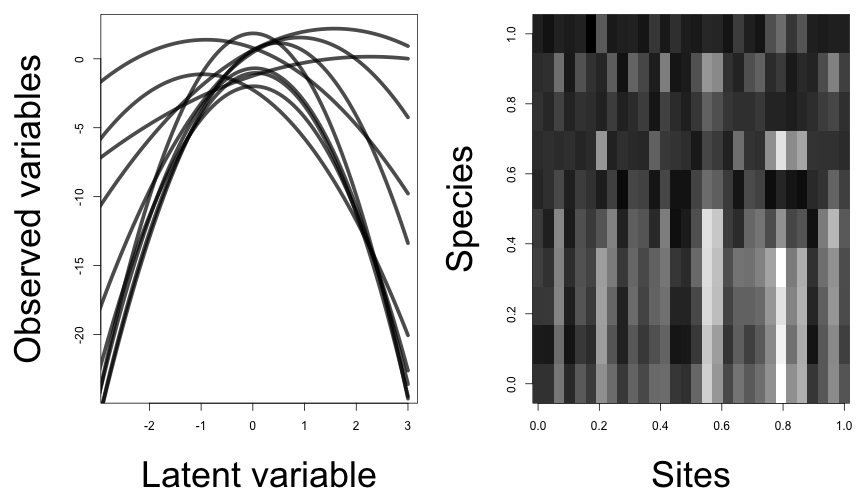

A small example -- Les poissons du Doubs

Verneaux (1973)
Steve Walker, Department of Mathematics and Statistics, McMaster University
Verneaux (1973)
Environmental variables
distance to the source
altitude
slope
minimum average debit
pH
total hardness of water
phosphates
nitrates
ammonia nitrogen
dissolved oxygen
biological demand for oxygen


Verneaux (1973)


Ovaskainen et al (2010)
Where:

Ovaskainen et al (2010)






e.g. Whittaker (1952)

